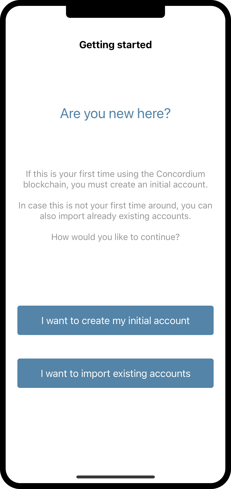
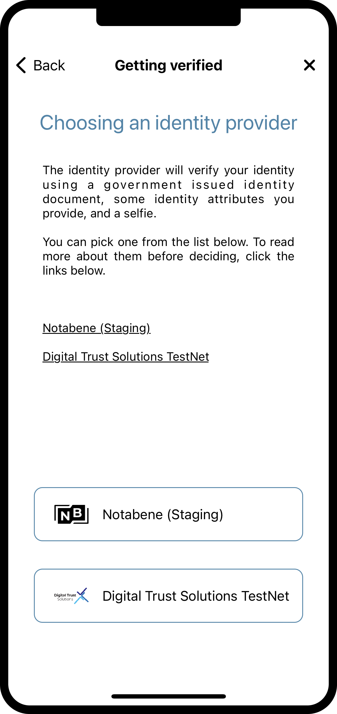
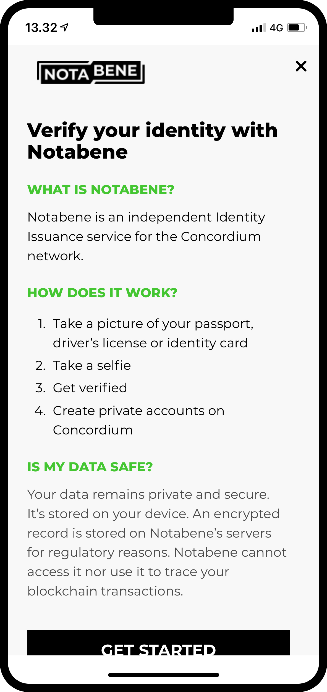
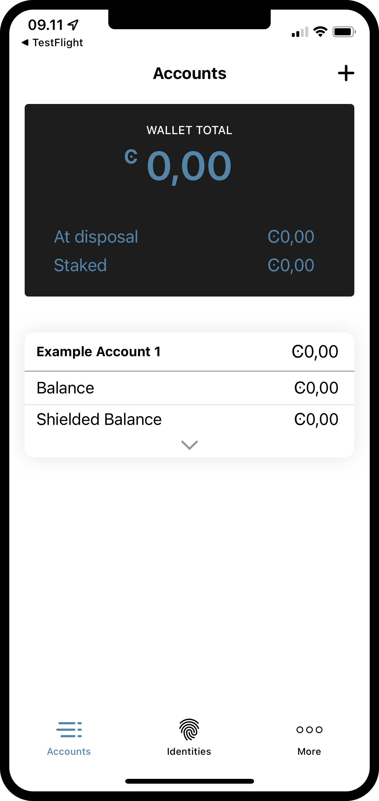

Get started with the Mobile Wallet¶
Before following this guide you should have finished installing Concordium Mobile Wallet, as described in Downloads.
Set up a passcode and biometrics¶
When you open the Mobile Wallet for the first time, you will be greeted by a flow that will help you setup a passcode and biometric authentication, create an Initial Account, and it will also guide you through getting an Identity. The initial account is a special type of account, that is submitted to the chain by the Identity Provider, upon creation of an identity. You can make the the same transactions from an initial account as from regular accounts, but the owner of the initial account will be known by the identity provider. After your identity is created you will be able to submit accounts to the chain yourself, and these will be unknown by the identity provider. You can learn more about accounts on the Identities and accounts page.
After reading and accepting the Terms and Conditions for the Concordium Mobile Wallet, the first screen you will meet when opening the Mobile Wallet is this one. It will just explain that you have to go through this process to get started.

If you are ready to continue, you can press Continue. The next screen will ask you to input a six-digit passcode. If you would rather use a full password including letters, you can also choose to do so here.

Having chosen either a passcode or a full password, you will get the option to also use biometrics if your phone supports it, i.e. facial recognition or fingerprint. We recommend using biometrics if you have the option to do so.

Request your initial account and identity¶
Next up, you will get a choice between making a new initial account and identity, or importing an already existing set. Assuming this is the first time you are using Concordium Mobile Wallet, you can choose I want to create my initial account to continue.
{kind=link}
On the next screen you will see a description of what the initial account is and the three steps you have to finish to get it, along with your identity. In short, the initial account is an account submitted to the chain by the identity provider of your choice, which means they will know that you are the owner of the account. Later you will be able to submit accounts to the chain by yourself, which means the owner of these accounts will be only known by you.

The three steps mentioned above are:
Naming of your initial account
Naming your identity
Requesting the initial account and identity from an Identity Provider of your choice
You will meet the first step on the next page, which prompts you to enter a name for your initial account. Pressing continue will take you to the next page, on which you have to name your identity. Both of these names will only be known by yourself, so you can name them more or less whatever you want (There are a few constraints on what letters and signs you can use).
In the examples below, we choose to call our initial account Example Account 1 and our identity Example Identity 1. As mentioned, you can choose whichever names you want.


By pressing Continue to identity providers, you will be taken to a page where you have to choose between identity providers. An identity provider is an external third party who will verify who you are, before returning an identity object to be used for creating accounts on the chain. For now Notabene is the only option, but more might be added later.
{kind=link}
By pressing an identity provider button, you will be taken to the provider’s identity issuance flow. It will look similar to the one below.
{kind=link}
After finishing the identity issuance flow, you will be met with the following screen. It will show you an overview of your identity and the initial account.

Depending on the identity provider you have chosen, the layout of the identity card might differ slightly. You can see that the Example Account 1 is held by the identity Example Identity 1. The account created during this process will be marked with (Initial) in the app, so you know which account is the initial account submitted to the chain by the identity provider.
By pressing Finish you will be taken to the Accounts screen. On this screen you will be able to see your newly created initial account. It might be showing a Pending icon, which means the identity provider is still working on submitting and creating your initial account and identity. You can also navigate to the Identities screen by clicking on Identities at the bottom of the display. On this screen you can see your newly created identity, which might also still be pending in case the identity provider has not finished it yet. All you have to do now, is to wait for them to finish.
{kind=link}

Support & Feedback¶
If you have questions or feedback, join us on Discourse, or contact us at support@concordium.software.